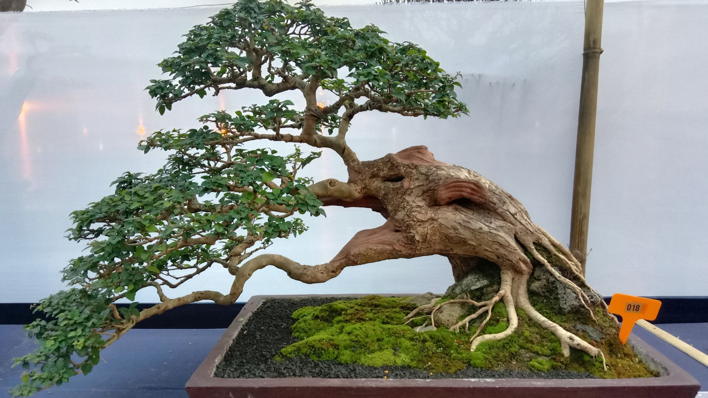
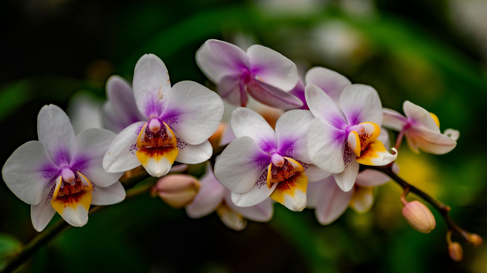

Observa la luz
Interior, exterior, sol directo o sombra cambian por completo la elección.
Garden · Valldemossa
Plantas, texturas, piezas y rincones pensados para inspirarte en persona. En SA Jardinería cada visita empieza con una vuelta tranquila y una buena pregunta.

La experiencia Garden
Nuestro Garden está organizado para que puedas comparar, preguntar y descubrir. No trabajamos como un catálogo infinito: preferimos una selección viva, cambiante y acompañada por criterio profesional.

Ritmo de estación
Color, floración y variedad que cambian con el calendario. Una selección viva para renovar terrazas, entradas, balcones y jardines siguiendo el pulso de cada época del año.
Consejo: Pregunta en tienda qué variedades están mejor en ese momento: la temporada se elige mejor viéndola.

Paisaje local
Especies que dialogan con el clima, la luz y el terreno de la isla. Plantas con carácter mediterráneo para proyectos que buscan naturalidad, resistencia y coherencia con el entorno.
Consejo: Una planta bien elegida para su entorno necesita menos esfuerzo y envejece mejor.

Sol y geometría
Formas escultóricas, texturas minerales y especies que convierten la sequedad en belleza. Un rincón pensado para amantes de cactus, suculentas y composiciones de bajo consumo hídrico.
Consejo: En cactus y suculentas, el exceso de cuidado suele ser peor que la falta de cuidado.

Arte vivo
Pequeños paisajes que piden observación, paciencia y técnica. Seleccionamos bonsáis y complementos para quienes empiezan y para quienes ya disfrutan cuidando cada detalle.
Consejo: Un bonsái no se compra solo por su forma: también por el compromiso de luz, agua y tiempo que necesita.

Elegancia y matiz
Flores precisas, raíces visibles y una belleza que recompensa la constancia. Nuestro orquideario reúne variedades para regalar, decorar o aprender a cuidar con más seguridad.
Consejo: La clave está en observar raíces, luz y humedad antes de cambiar rutinas de riego.

Verde en casa
Follajes, volúmenes y texturas para hogares, oficinas y espacios cubiertos. Te ayudamos a elegir según luz, tamaño, mantenimiento y estilo del ambiente.
Consejo: Traer una foto del espacio ayuda mucho: la luz real manda más que cualquier tendencia.
La pieza que acompaña
La maceta cambia la presencia de una planta. Trabajamos piezas para interior y exterior, buscando proporción, textura y coherencia con cada espacio.
Consejo: Una buena maceta no solo decora: también ayuda a que la planta viva mejor.
Objetos con alma
Piezas singulares para añadir memoria, textura y carácter a jardines, patios e interiores. Objetos que no buscan parecer nuevos, sino pertenecer al lugar.
Consejo: Las antigüedades funcionan mejor cuando no compiten con el verde, sino que lo acompañan.
No hace falta venir con todo decidido. A veces basta con saber dónde irá la planta, cuánta luz recibe y cuánto tiempo quieres dedicarle.
Interior, exterior, sol directo o sombra cambian por completo la elección.
Hay plantas agradecidas y otras que piden más atención. Elegir bien evita frustraciones.
Altura, volumen y maceta importan tanto como la especie.
El consejo presencial es parte de la experiencia Garden.
El Garden está vivo: algunas piezas permanecen, otras llegan y se van. Por eso merece la pena volver.
Visita presencial
Estamos en la carretera de Valldemossa, en un entorno pensado para mirar, comparar y elegir con calma.